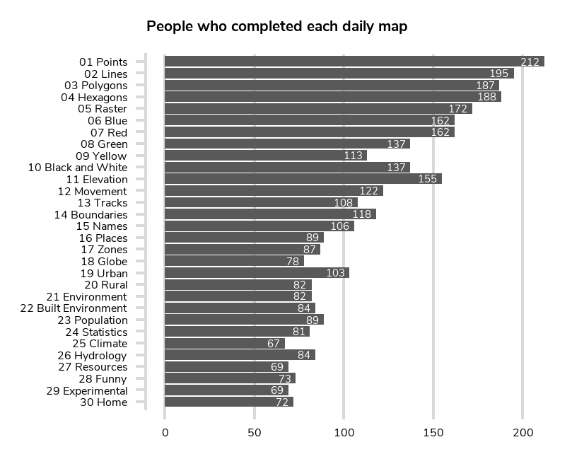
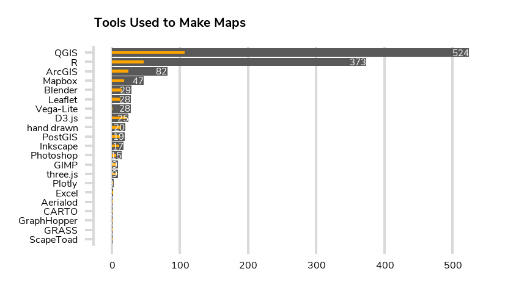

Statistics
There have been at least 632 people tweeting on the hashtag. Currently I've indexed 3313 maps by 412 people.
To see an overview of all the tweets using the hashtag (including retweets, announcements, and discussions) see the report by TweepsMap.
Progress
The main reason this sort of thing hasn't been done by dozens of other people already is that the tweets are a vast unstructured data set. Even the seemingly 'simple' task of assigning each map to one of the 30 days is manually time consuming - a lot of people didn't explicitly label the theme, or they got the number wrong, and even if they did there wasn't a consistent format. For something like topics or map types without a clear classification scheme it's even more time consuming. So be aware with all these stats that they're necessarily incomplete for now.
I've managed to get through over half the tweets and assign them a challenge day. I've focussed on the easily identifiable ones, so hopefully (timewise) a good proportion of the remainder are just discussion rather than new maps. Of those I have indexed, the majority initially only had a day assigned (in the interest of time). Currently, 71% don't have an area assigned (ie continent or country) and 91.5% don't have a city assigned (though many don't need one); these are usually pretty easily to determine manually (though it's slow) but there's limited scope for automation. 67.5% don't have any tools assigned; I've automated pretty much all I can here from the tweets so the rest will have to come from the creators. 94.9% don't have the type of map assigned and 95.5% don't have topics assigned; both of these require manual inspection and assessment which is quite slow.
Daily Themes
People
There were 24 people who managed the massive task of creating all 30 maps!(If you're not on this list and should be then let me know!)
- @_penguin_runner
- @AllisonCully
- @AlsuhailFaris
- @atdodkonfektes
- @citizenfishy
- @CRVanPollard
- @evelynuuemaa
- @GeomniUK
- @gontsa
- @Grisoudre
- @HeikkiVesanto
- @hireuter
- @hrbrmstr
- @IIEGJ
- @ijturton
- @iservia
- @jerry_shannon
- @LocalFocusNL
- @my_physical
- @PhilPierdo
- @pnelson917
- @positium
- @samwise_v
- @ttso
I'll aim to identify the location of the map authors, but haven't done that yet.
Places
Bear in mind that only 29% of the maps have an area assigned, so this might reflect my interests to start with.
The main bar is the number of maps with that label. The small orange bar is the number of cartographers who have produced the maps in that area.

Tools
Only approximately one third of the tweets mention the tools used.
Map Types
Best to wait until we have more data.
Topics
Best to wait until we have more data.